Tacos: Späte Taquería: Fleisch vom Grill, darauf Zwiebeln, Koriander und eine Batterie Salsas – von mild bis „Vorsicht".
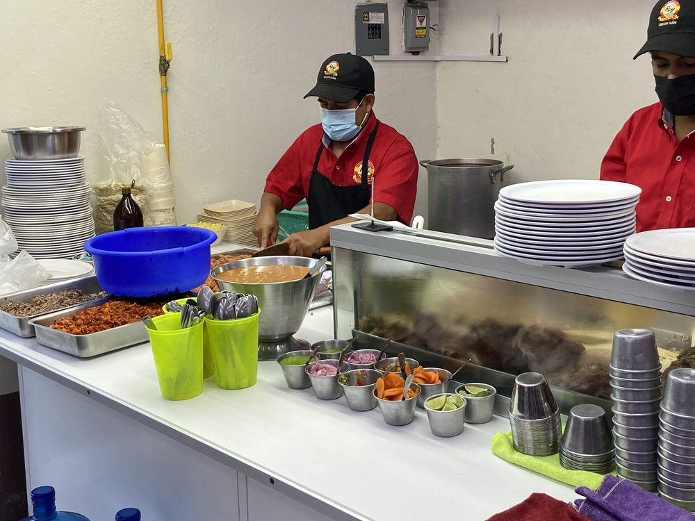
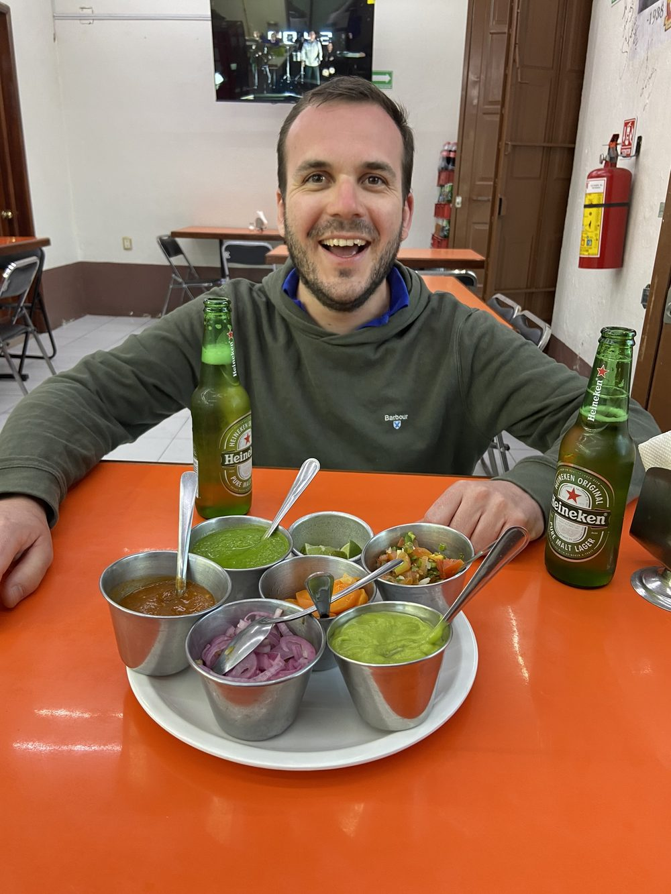
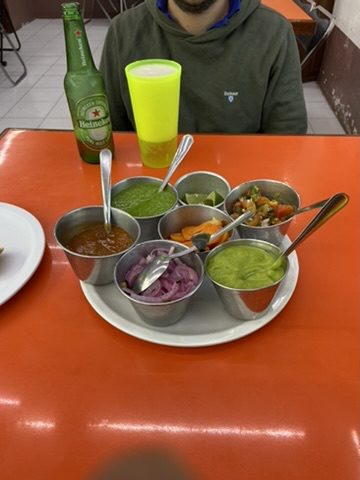
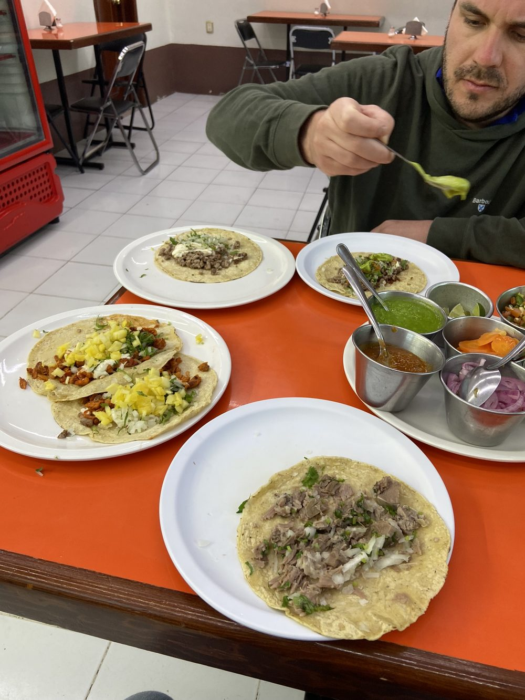
In der Mezcalería: Weiter in eine Mezcalería. Neben Mezcal: Craft-Bier aus der Region und Etiketten, die man sich merken will.
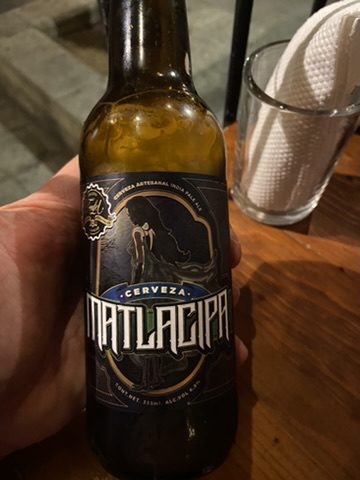
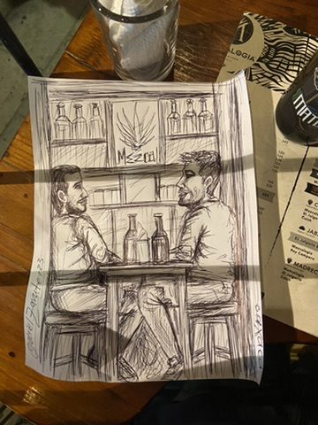
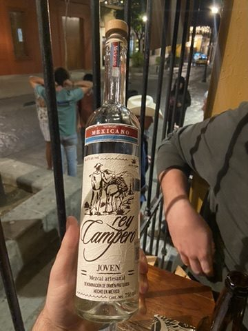
Zócalo bei Nacht: Das Zentrum von Oaxaca wird abends zur Bühne: Esquites-Stände, Kostümierte, Familien. Auf dem Zócalo stehen Protestzelte – Plantones, mit denen Gruppen seit Jahrzehnten ihre Forderungen sichtbar machen. Die Kathedrale und die Arkaden sind warm angestrahlt.
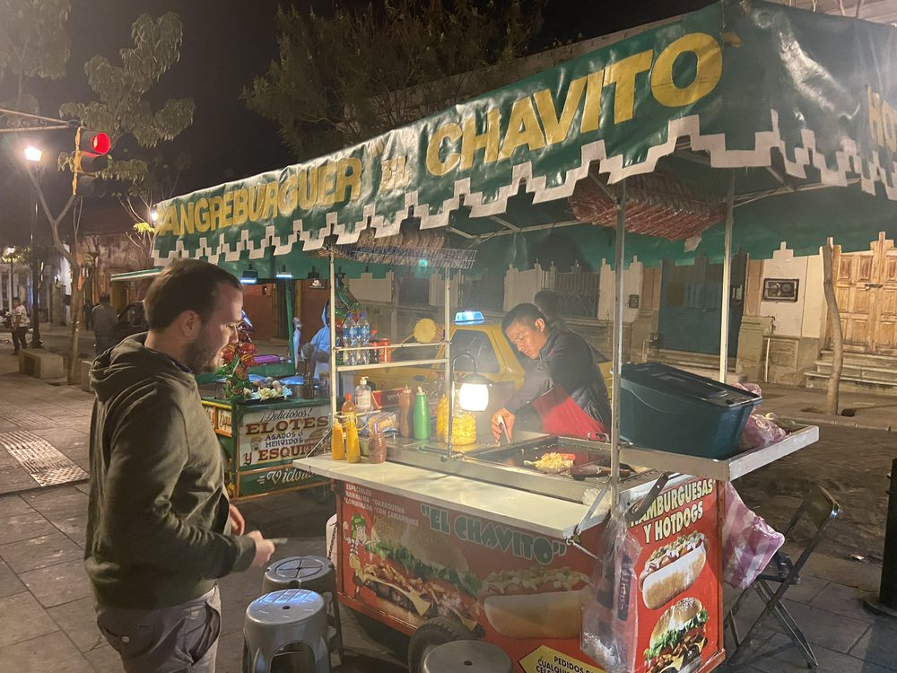
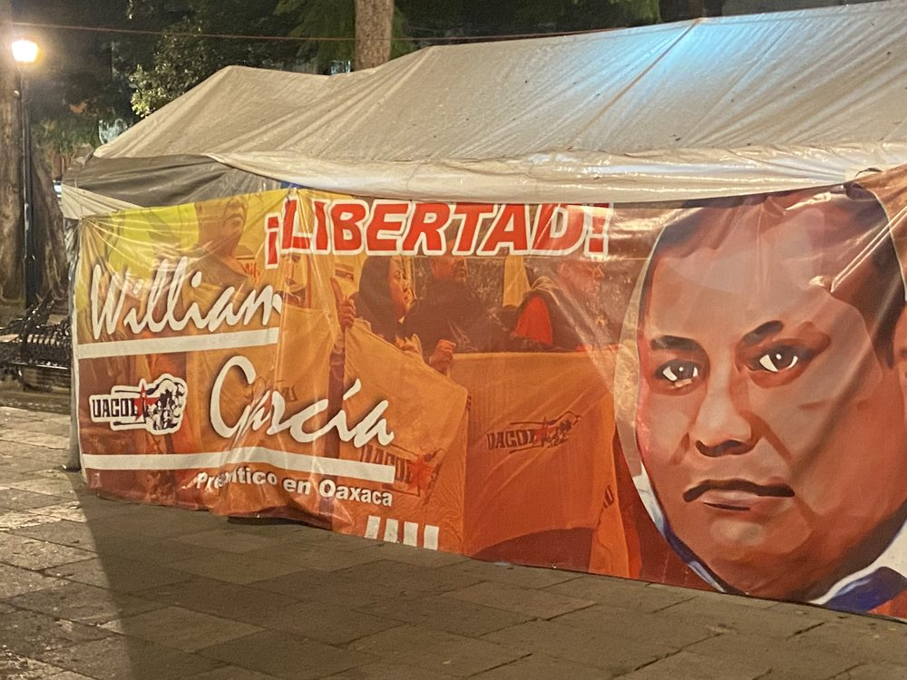
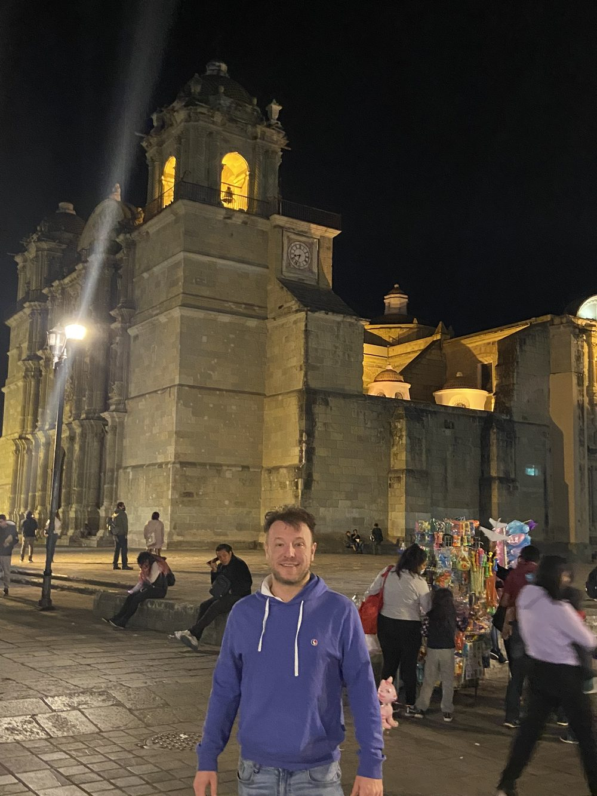
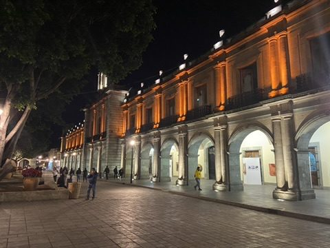
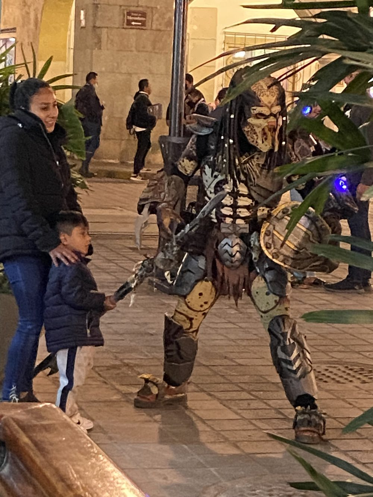
Popkultur trifft Kolonialkulisse: ein „Predator" posiert für Kinderfotos.
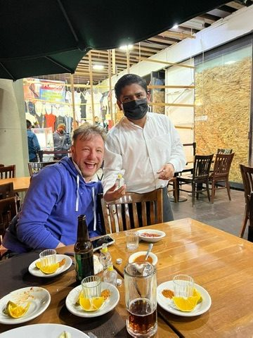
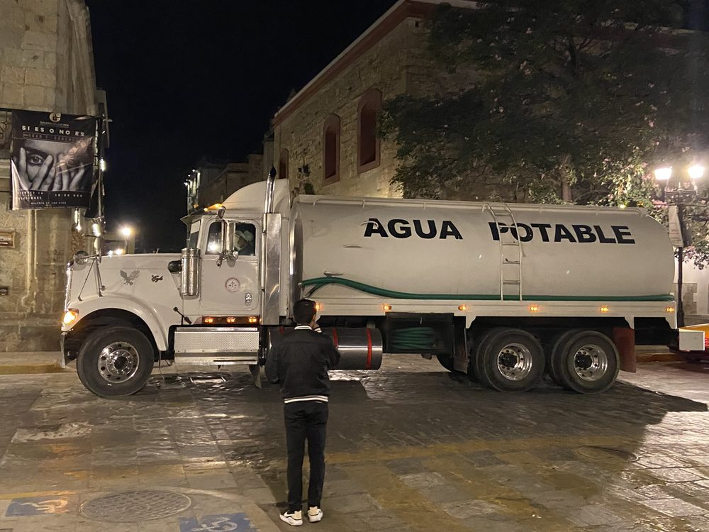
Nachts rollen die Pipas: Oaxaca leidet unter chronischem Wassermangel, viele Häuser werden per Tankwagen beliefert.